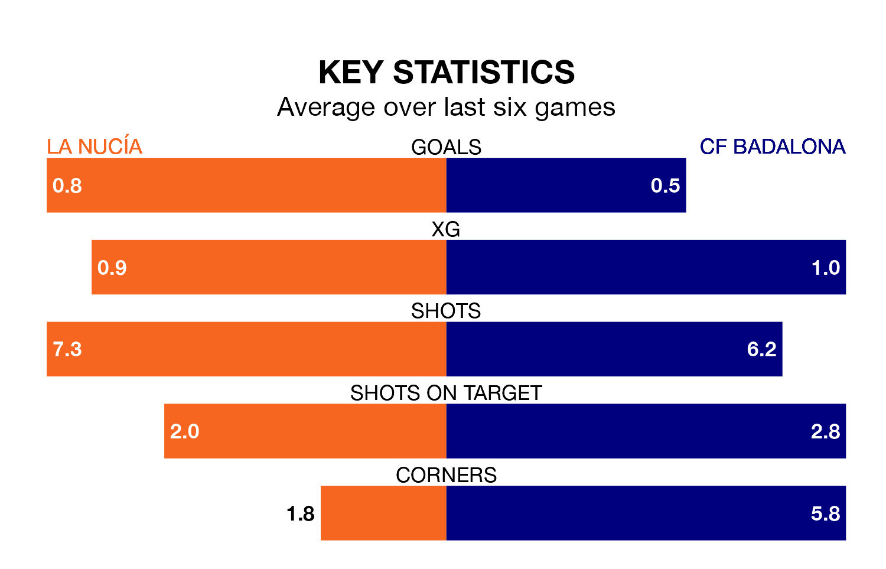

Struggling La Nucía face CF Badalona at the Estadio Camilo Cano on Sunday looking to build on a win in their last league outing.
After securing all three points with a 1-4 victory over Peña Deportiva on April 28, la Nucía sit bottom of the Segunda División RFEF Group 3.
They travel to play a Badalona side fourth in the standings, who lost in their last match, 2-1 against Hércules CF.
La Nucía are in bad form in the Segunda División RFEF Group 3, with one win and a draw from their last six games.
But with no wins and a draw over that period, Badalona's form is even worse – they have taken one point from 18, compared to la Nucía's four.
With 23 goals in 33 games so far this season, the home team are the league's joint-second-lowest scorers with 0.7 goals per game. And they are conceding more than average, letting in 60 goals at a rate of 1.8 per game.
The visitors, meanwhile, are average scorers, with 1.2 goals per game. They have conceded 0.8 goals per game.
In the last five years, La Nucía and Badalona have played each other on five occasions. La Nucía won one of them, Badalona two, and they drew twice.
On average, la Nucía scored 1.0 goal and Badalona 1.6 in those matches.
Their last meeting was on January 7, when Badalona won 1-0 at home.
Updated: 12:00 (UTC), 02/05/24